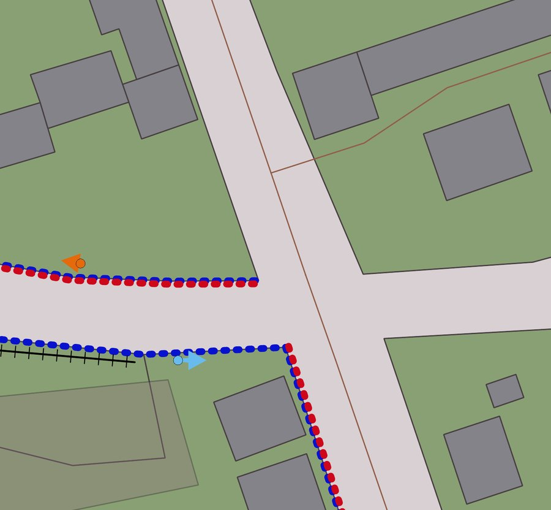
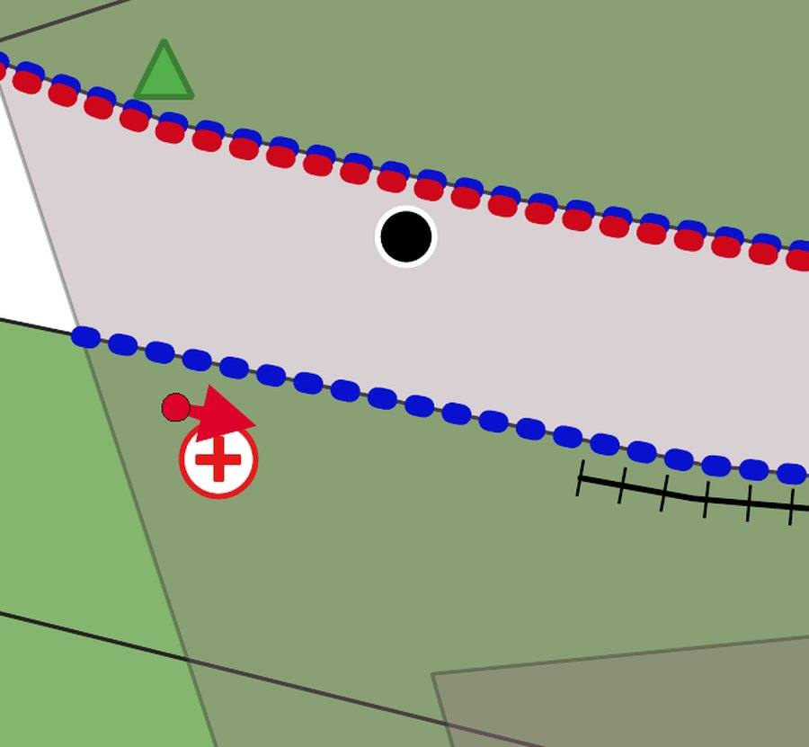
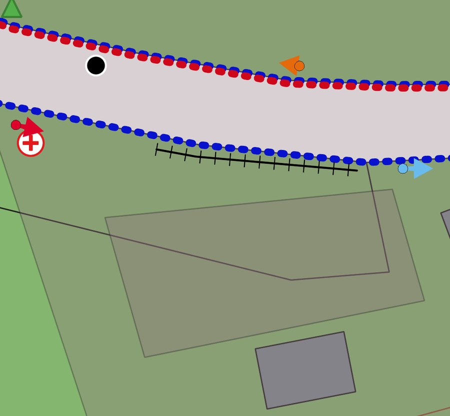
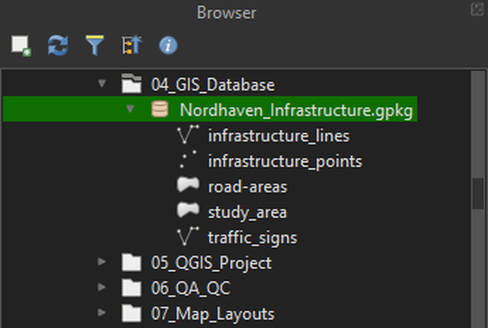

NORDHAVEN
Urban infrastructure mapping and geospatial data engineering. An independent case study in Bremen, Germany.
Read this first. NORDHAVEN is an independent demonstration project based on my professional experience. It is not a client deliverable, an official Bremen infrastructure inventory, or a copy of any employer's data. The OpenStreetMap layers are the only external data. The infrastructure features, attribute schema and classifications were created for this project.
The finished map
The map shows how the layers read together: surface areas as the backdrop, point assets on top, linear features along the carriageway edge, and traffic signs as direction arrows. The legend is grouped by layer, so each symbol can be traced back to a table in the database.
How it was built
The project follows the same order as a production mapping job, at demonstration scale.
- OSM reference dataRoads, buildings and land-use layers for Bremen
- QGIS projectQGIS 3.10.13, working CRS EPSG:25832
- DigitisationPolygon, point and line demonstration features
- AttributesIdentifiers, classes, materials, source, review status
- GeoPackageNordhaven_Infrastructure.gpkg with five layers
- QA/QC and mapBasic checks, then a print layout exported to PDF
Where each layer comes from
| Group | What it is | Layers |
|---|---|---|
| Reference data | OpenStreetMap-derived layers that give spatial context | bremen_gis_osm_roads_free, bremen_gis_osm_buildings_a_free, bremen_gis_osm_landuse_a_free |
| Demonstration features | Infrastructure features created independently for this project | road-areas, infrastructure_points, infrastructure_lines, traffic_signs |
| Database and outputs | The resulting GeoPackage, QGIS project and map | Nordhaven_Infrastructure.gpkg, Nordhaven_Master.qgz, overview map (PDF) |
The exact OSM download source and extraction date have not been verified, so this project makes no claim about how current the reference data is.
Four feature categories

Road areas
Parking area, pedestrian area and roadway, with surface material and area. 3 records.

Infrastructure points
Manhole, streetlight and tree, with status and material. 3 records.

Infrastructure lines
Curbs, drainage channels and crash barriers, with material and condition. 6 records.

Traffic signs
Synthetic regulatory, warning and information signs. In the current database this layer uses line geometry, not points. 3 records.
Attributes and database
Geometry says where a feature is. The attribute schema says what it is, what it is made of, where the record came from and whether anyone has reviewed it. The schema was designed for this project and is not an official standard.
| Field | Layer | Purpose |
|---|---|---|
feature_id | All four | Identifier for each feature |
area_class, surface_material, area_m2 | road-areas | Area type, surface, and measured area |
asset_type, asset_status, material | infrastructure_points | Which asset it is, its status, and what it is made of |
infrastructure_type, material, condition | infrastructure_lines | Which linear feature, its material, and its condition |
sign_category, sign_code, sign_text, mounting_type, orientation | traffic_signs | Sign class, code, text, how it is mounted and which way it faces |
source_ref | All four | Where the record came from, such as an OSM reference, manual digitisation or a synthetic demo feature |
review_status | All four | Review state. It is Pending on every record shown here |
remarks | points, lines, traffic_signs | Free-text notes |
The attribute tables in QGIS
One portable database
All layers are stored in a single GeoPackage file, so the data, its structure and its layer names travel together.
- Nordhaven_Infrastructure.gpkg
- infrastructure_lines (line)
- infrastructure_points (point)
- road-areas (polygon)
- study_area (polygon)
- traffic_signs (line)

The stored layer name is road-areas with a hyphen. Some earlier notes write road_areas. This page uses the stored name.
Quality checks
These are the checks I actually ran. They are basic and demonstration-level.
Invalid geometries
QGIS Check Validity was run on selected geometry layers. The tested layers returned zero invalid geometries.
Incomplete road-area records
A query on road-areas looked for missing values in area_class, surface_material, area_m2, source_ref and review_status. It selected zero features.
Visual review
Mapped features were inspected in QGIS against the OSM reference layers for representation and consistency.
- Positional accuracy assessment
- Topology validation
- Automated Python QA/QC
- PostGIS validation
- Production certification
Limits and next steps
OpenStreetMap may not contain every asset, and the mapped features are demonstration data. They should not be treated as an authoritative asset inventory.
- Python and GeoPandas to automate repeated processing and attribute checks
- PostGIS for scalable storage and querying
- Further QA/QC for duplicates, overlaps, gaps and classification consistency
- Automated validation reports
Downloads
- Case study deckPDF, 8 slides
- Technical methodology and QA/QC reportPDF
- Project overviewPDF
- Infrastructure overview mapPDF, A4 landscape
The project also produced Nordhaven_Infrastructure.gpkg and Nordhaven_Master.qgz. They are not hosted on this site.